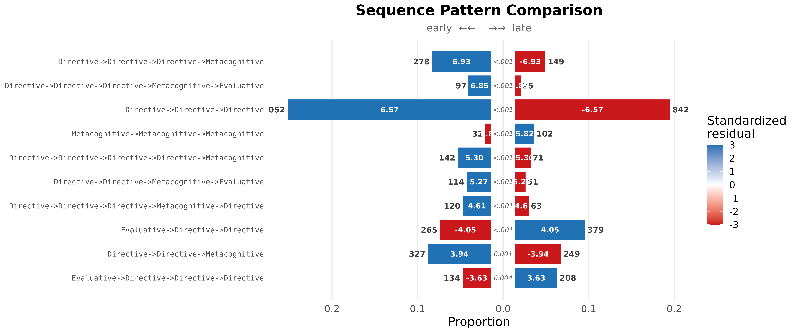
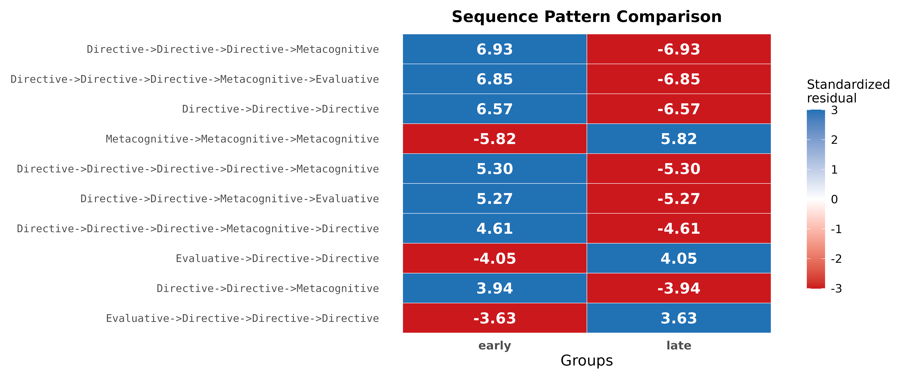
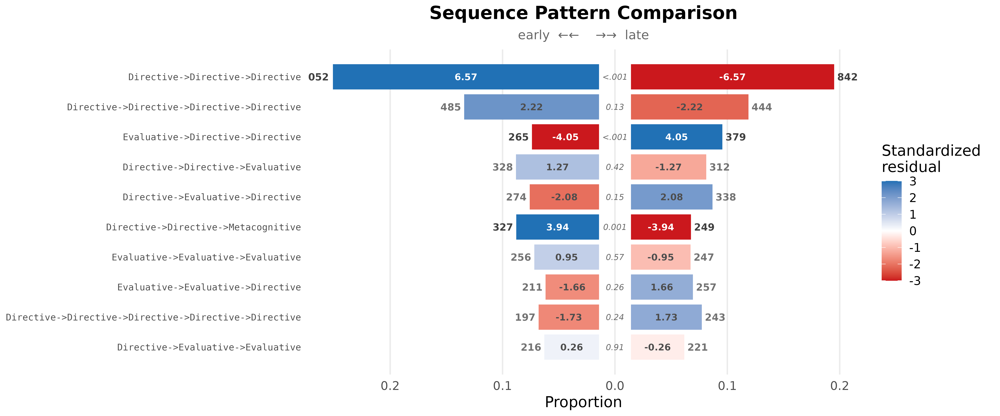

Sequence Pattern Comparison: Early vs Late Human-AI Interactions
Source:vignettes/sequence-comparison.Rmd
sequence-comparison.Rmd1. The dataset
human_ai_long is a bundled dataset in
Nestimate containing coded action sequences from
429 human-AI coding sessions across 34 projects. Every
row is a single action taken during a session with a
cluster label grouping actions into six broad types:
Action, Communication, Directive,
Evaluative, Metacognitive,
Repair.
data(human_long, package = "Nestimate")
dat <- as.data.frame(human_long)
cat("rows:", nrow(dat),
"| sessions:", length(unique(dat$session_id)),
"| projects:", length(unique(dat$project)), "\n\n")
#> rows: 10796 | sessions: 429 | projects: 34
print(table(dat$cluster))
#>
#> Directive Evaluative Metacognitive
#> 6024 3029 17432. Split by time — early vs late interactions
For each session, the first half of its actions is labeled
"early" and the second half "late". Base R
ave() does both jobs — per-session count and per-session
position — and then a single ifelse() writes the label.
3. Build the grouped network
build_network() is the canonical entry point. Passing
group = "half" produces a netobject_group with
one netobject per half. Each netobject’s $data field holds
the session-half sequences.
net <- build_network(
data = dat,
actor = "session_id",
action = "cluster",
group = "half",
method = "relative"
)
net
#> Group Networks (2 groups, group_col: half)
#>
#> Group Nodes Edges Weights
#> early 3 9 [0.105, 0.637]
#> late 3 9 [0.131, 0.575]4. Compare patterns between early and late
sequence_compare() accepts a
netobject_group directly — group labels are read from the
list names, no separate group argument needed. Pattern
lengths 3–5, minimum frequency 25, chi-square test with FDR
correction.
res <- sequence_compare(
net,
sub = 3:5,
min_freq = 25L,
test = "chisq",
adjust = "fdr"
)
res
#> Sequence Comparison [100 patterns | 2 groups: early, late]
#> Lengths: 3, 4, 5 | min_freq: 25 | chi-square (fdr)
#>
#> pattern length freq_early
#> Directive->Directive->Directive->Metacognitive 4 278
#> Directive->Directive->Directive->Metacognitive->Evaluative 5 97
#> Directive->Directive->Directive 3 1052
#> Metacognitive->Metacognitive->Metacognitive 3 32
#> Directive->Directive->Directive->Directive->Metacognitive 5 142
#> Directive->Directive->Metacognitive->Evaluative 4 114
#> Directive->Directive->Directive->Metacognitive->Directive 5 120
#> Evaluative->Directive->Directive 3 265
#> Directive->Directive->Metacognitive 3 327
#> Evaluative->Directive->Directive->Directive 4 134
#> freq_late prop_early prop_late resid_early resid_late statistic p_value
#> 149 0.06876082 0.035100118 6.929245 -6.929245 47.32807 6.004603e-10
#> 25 0.02645214 0.006488451 6.849638 -6.849638 45.67504 6.979522e-10
#> 842 0.23672367 0.180803092 6.568847 -6.568847 42.81109 2.009648e-09
#> 102 0.00720072 0.021902512 -5.820751 5.820751 32.87528 2.456621e-07
#> 71 0.03872375 0.018427200 5.303063 -5.303063 27.38985 3.326031e-06
#> 51 0.02819688 0.012014134 5.271906 -5.271906 26.96981 3.444305e-06
#> 63 0.03272430 0.016350895 4.605937 -4.605937 20.53065 8.383434e-05
#> 379 0.05963096 0.081382865 -4.045115 4.045115 16.03382 7.777640e-04
#> 249 0.07358236 0.053467898 3.939441 -3.939441 15.18176 1.084909e-03
#> 208 0.03314371 0.048998822 -3.627419 3.627419 12.76045 3.540257e-03
#> ... and 90 more patterns
head(res$patterns, 10)
#> pattern length freq_early
#> 1 Directive->Directive->Directive->Metacognitive 4 278
#> 2 Directive->Directive->Directive->Metacognitive->Evaluative 5 97
#> 3 Directive->Directive->Directive 3 1052
#> 4 Metacognitive->Metacognitive->Metacognitive 3 32
#> 5 Directive->Directive->Directive->Directive->Metacognitive 5 142
#> 6 Directive->Directive->Metacognitive->Evaluative 4 114
#> 7 Directive->Directive->Directive->Metacognitive->Directive 5 120
#> 8 Evaluative->Directive->Directive 3 265
#> 9 Directive->Directive->Metacognitive 3 327
#> 10 Evaluative->Directive->Directive->Directive 4 134
#> freq_late prop_early prop_late resid_early resid_late statistic
#> 1 149 0.06876082 0.035100118 6.929245 -6.929245 47.32807
#> 2 25 0.02645214 0.006488451 6.849638 -6.849638 45.67504
#> 3 842 0.23672367 0.180803092 6.568847 -6.568847 42.81109
#> 4 102 0.00720072 0.021902512 -5.820751 5.820751 32.87528
#> 5 71 0.03872375 0.018427200 5.303063 -5.303063 27.38985
#> 6 51 0.02819688 0.012014134 5.271906 -5.271906 26.96981
#> 7 63 0.03272430 0.016350895 4.605937 -4.605937 20.53065
#> 8 379 0.05963096 0.081382865 -4.045115 4.045115 16.03382
#> 9 249 0.07358236 0.053467898 3.939441 -3.939441 15.18176
#> 10 208 0.03314371 0.048998822 -3.627419 3.627419 12.76045
#> p_value
#> 1 6.004603e-10
#> 2 6.979522e-10
#> 3 2.009648e-09
#> 4 2.456621e-07
#> 5 3.326031e-06
#> 6 3.444305e-06
#> 7 8.383434e-05
#> 8 7.777640e-04
#> 9 1.084909e-03
#> 10 3.540257e-03How to read the residuals
For every pattern, the standardized residual is computed from a 2x2
contingency table (this pattern vs. everything else):
-
Positive on
early→ over-represented in the first half of sessions -
Positive on
late→ over-represented in the second half -
|z| > 1.96corresponds top < 0.05;|z| > 3is very strong evidence
5. Pyramid plot
Back-to-back bars with residual labels inside each segment. Both sides use the same standardized-residual color scale.
plot(res, style = "pyramid", show_residuals = TRUE)
6. Heatmap
Same top patterns, same color scale, alternative layout. Works for any number of groups (pyramid requires exactly 2).
plot(res, style = "heatmap")
7. Sort by frequency
By default patterns are ranked by test statistic. Pass
sort = "frequency" to rank by total occurrence count
instead — useful for focusing on the most common patterns regardless of
their group difference.
plot(res, style = "pyramid", sort = "frequency", show_residuals = TRUE)
9. Note on the test choice
This vignette uses test = "chisq" because the
split-within-session design makes the two halves from the same session
non-independent (same human, same AI, same project). The chi-square
answers the k-gram-level question “do the rates differ between halves?”
and is the right tool for this design.
test = "permutation" shuffles group labels at the
sequence level and assumes exchangeability across sequences — it’s the
right choice when the groups are independent cohorts (e.g.,
Project_A vs Project_B), not when each session
contributes to both groups.